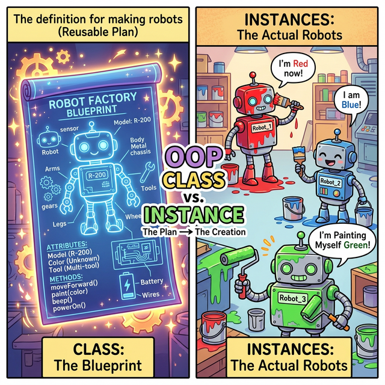

1주차: OOP 패러다임 - 객체지향 설계의 시작 🏗️
반갑습니다! 2학기 과정에서는 파이썬의 핵심 기둥 중 하나인 객체지향 프로그래밍(OOP)을 배웁니다. 복잡한 현실 세계를 데이터와 코드로 추상화하고 설계하는 첫 걸음을 함께 시작해 봅시다.
학습목표
본 장에서는 붕어빵을 끝없이 잉태해 내는 추상적인 황금 틀인 ‘클래스(Class)’와 제각각 다른 맛을 품고 그 틀에서 찍혀 나온 구체적인 실체인 ‘인스턴스(Instance)’의 차이를 명확하게 눈으로 확인합니다. 단순히 문법을 암기하는 것에서 벗어나, “왜 함수와 변수를 굳이 한 덩어리로 묶어서 관리해야 하는가?”라는 유지보수 관점에서의 객체지향적 설계 철학(OOP Design)을 깨우칩니다. 객체의 첫 숨을 불어넣는 생성자(__init__)의 역할과 원리를 투명하게 이해합니다.
💡 TL;DR (1분 핵심 요약): 객체지향 클래스란?
- 클래스 (Class): 물건을 찍어내기 위한 종이 위 “설계도” 혹은 “공장 라인”입니다. 여기엔 아무런 실체(메모리)도, 색깔도 없습니다. 단순히 “로봇은 이름과 배터리가 있고, 걸을 수 있다”는 설계만 존재합니다.
- 인스턴스 (Instance): 설계도를 통해 실제로 공장에서 철판을 조립해 만든 “구체적인 로봇 실물 장난감”입니다. 이 장난감들은 각자 다른 이름(Wall-E, R2D2)과 배터리 잔량을 가지며 독립적으로 움직입니다.
- 설계의 핵심: 파이썬은 “상태를 나타내는 데이터(명사/변수)”와 “그 데이터를 조작하는 행동(동사/함수)”을 하나로 튼튼하게 묶어버리기 위해 클래스를 도입했습니다. 이를 캡슐화(Encapsulation)라고 부릅니다.
1. 세상 모든 것을 찍어내는 마법의 설계도
파이썬의 세계에서는 숫자, 문자열, 리스트, 나아가 함수까지도 무언가의 설계도로부터 찍혀 나온 모든 것이 객체(Object)입니다. 우리가 직접 우리만의 독창적인 새로운 데이터 타입(설계도)을 정의할 때 class를 사용합니다.

(웹툰 비유: 화면 왼쪽에는 추상적인 선방향만 그려져 있는 홀로그램 설계도(클래스)가 떠 있습니다. 그러나 현실 세계인 오른쪽에서는, 이 단 하나의 설계도로부터 빨간 페인트를 뒤집어쓴 로봇, 빗자루를 든 파란 로봇 등 ‘진짜 실체(인스턴스)’들이 끊임없이 조립되어 양산되고 있습니다.)2. 기본 문법: 선언과 탄생의 순간
클래스를 정의할 때는 class 키워드를 사용하며, 파이썬의 클래스 이름은 전통적으로 파스칼 케이스(PascalCase: 단어의 첫 글자마다 대문자)로 짓습니다.

예제 1: 빈 껍데기 설계도와 독립된 두 개의 개체
# 1. 세상에 없던 나만의 '설계도(클래스)'를 하나 등록합니다.
class Robot:
pass # 아직 내용은 텅 비어 있습니다.
# 2. 공장에 주문을 넣어 실물 장난감(인스턴스) 2대를 찍어냅니다!
robot_a = Robot()
robot_b = Robot()
print(type(robot_a)) # <class '__main__.Robot'>
print(robot_a == robot_b) # False (설계도만 같을 뿐, 각자 다른 메모리 집 주소를 가진 완전히 남남입니다!)
3. 생성자 (Constructor): 객체의 첫 숨결 __init__
공장에서 막 찍혀 나온 로봇은 이름도 색깔도 없는 깡통입니다. 객체가 이 세상에 태어나는 바로 그 0.1초의 찰나! 가장 먼저 자동으로 한 번 실행되면서 로봇의 초기화 세팅(도색, 이름표 부착)을 강제로 집행하는 함수가 바로 생성자 __init__ 입니다.
예제 2: 초기화 세일즈맨 __init__
class Robot:
# 파이썬 특수 매직 메서드 (양쪽 언더바 2개)
# 로봇() 을 찍어내는 순간 무조건 제일 먼저 은밀하게 실행됩니다!
def __init__(self, name, color):
self.name = name # 이 로봇의 명찰에 외부에서 받아온 name을 적습니다.
self.color = color # 이 로봇의 도색을 외부에서 받아온 color로 칠합니다.
print(f"삐릭! [{self.name}] 로봇({self.color}색) 초기화 완료!")
# 괄호 안에 값을 넘겨주면, 그 값들이 __init__ 메서드로 곧장 빨려 들어갑니다.
robot1 = Robot("R2D2", "White/Blue")
robot2 = Robot("C3PO", "Gold")
# robot1.name 은 R2D2, robot2.name 은 C3PO로 완벽히 격리된 데이터를 가집니다.
☕ Java vs 🐍 Python 스나이퍼 비교
생성자의 이름
- Java: 생성자의 이름이
public Robot()처럼 클래스 이름과 100% 똑같아야 합니다. 클래스 이름 바꾸면 생성자 이름도 싹 다 고쳐야 하는 번거로움이 있습니다. - Python: 클래스 이름이 Robot이든 Terminator든 상관없이, 생성자는 평생 고정된 예약어 마법인
__init__하나만을 죽어라 씁니다.
코딩 영단어 학습 📝
- OOP (Object-Oriented Programming): 객체 지향 프로그래밍. (현실 세계의 사물들(물건, 무기, 몬스터, 자동차)을 있는 그대로 컴퓨터 속으로 복사해서 상태와 행동을 묶고 각자의 역할을 부여해 상호작용하게 만드는 위대한 설계주의 철학입니다.)
- Class: 부류, 등급, 학급. (공통된 성질이나 규격을 분류해 놓은 종이 도면(Blueprint)입니다. ‘자동차 설계도’지 실제 굴러가는 람보르기니가 아닙니다.)
- Instance: 사례, 경우, 구체적인 실체. (설계도 원본이 아니라, 그 도면을 보고 실제로 나사 하나하나 조여서 내 손에 만져지게 뚝딱 만들어져 나온 ‘실물 장난감 1호’를 뜻합니다.)
- Constructor (
__init__): 생성자, 건설자. (건물을 처음 지을 때 가장 먼저 뼈대를 세우고 기초공사를 하듯, 객체가 태어날 때 가장 먼저 내부 변수(체력, 마나, 이름)를 초기 세팅해 주는 특별한 노동자 함수입니다.)
✍️ 이번 주 연습 문제
문제 1. 절차지향 프로그래밍과 객체지향 프로그래밍의 핵심 철학 차이를 비유를 들어 설명해 보세요.
문제 2. 클래스와 인스턴스의 관계를 붕어빵 틀과 붕어빵의 예시 외에 자신만의 창의적인 비유를 통해 설명해 보세요.
문제 3. (심화) 파이썬에서 클래스 선언 자체가 메모리상에서 객체로 어떻게 평가되는지 ‘메타클래스(type)’의 개념과 결합하여 조사 및 정리해 보세요.
📖 교재 상세 학습: 01 나만의 독창적 붕어빵 틀 조각하기 (모델링)
01 세상에 없던 나만의 맞춤형 거푸집 제작 (데이터 모델링)
이제 수동적인 태도를 버리고, 파이썬 님이 하사하신 기성품 틀(list, str 등)에서 벗어나 볼 시간입니다. 창조주로서 내가 구상한 현실 세계의 복잡한 사물이나 개념을 코드로 마구 찍어낼 수 있는 나만의 전용 틀(class)을 직접 용접해 봅니다.
판타지 RPG 게임 생태계를 구성할 ‘몬스터’라는 종족의 기초 설계도(모델링)를 그려보겠습니다.
코드: 몬스터 개체군 설계도 작성 1단계
# 파이썬 커뮤니티의 룰: class 키워드 옆에 짓는 이름의 첫 글자는 웅장하게 대문자로 시작합니다.
class GameMonster():
pass # 일단 내부는 텅 비워둡니다.
# 방금 만든 무쇠 틀을 철컥 찍어내어, 필드에 슬라임과 고블린이라는 살아 숨 쉬는 실체(인스턴스) 두 마리를 스폰시킵니다!
slime_mob = GameMonster()
goblin_mob = GameMonster()
# 갓 태어난 상태라 백지 같은 두 녀석에게 콕 집어 각자의 개성(속성 데이터)을 불어넣어 줍니다.
slime_mob.name = "에메랄드빛 슬라임"
slime_mob.health = 30
goblin_mob.name = "몽둥이 고블린"
goblin_mob.health = 100
print(f"야생의 {slime_mob.name}(이)가 나타났다! 현재 체력 게이지는 {slime_mob.health}이다.")
출력 패널
야생의 에메랄드빛 슬라임(이)가 나타났다! 현재 체력 게이지는 30이다.
📖 교재 상세 학습: 1. 클래스와 인스턴스의 본질
1. 클래스와 인스턴스의 본질
프로그래밍에서 복잡한 시스템을 구축하기 위해서는 숫자나 문자열 같은 단순 데이터를 넘어, ‘상태(속성)’와 ‘행동(메서드)’을 하나로 묶은 독립적인 생명체인 객체(Object)를 만들어내야 합니다. 이 객체들의 협력으로 돌아가는 시스템을 ‘객체지향(Object-Oriented)’ 시스템이라고 부릅니다.
- 클래스(Class): 객체를 똑같이 찍어내기 위한 ‘설계도’ 혹은 ‘붕어빵 틀’입니다.
- 인스턴스(Instance): 설계도를 통해 컴퓨터 메모리 상에 실체화된 개별 ‘객체(붕어빵)’를 말합니다.
1.1 객체가 가져야 할 3대 특징
완벽한 객체라면 다음의 세 가지 특성을 만족해야 합니다.
- 정체성 (Identity):
모든 객체는 고유한 메모리 주소(레퍼런스)를 가집니다. 완전히 똑같은 데이터를 가졌더라도, 쌍둥이처럼 서로 다른 존재로 취급받아야 합니다. 파이썬에서는
id()함수를 통해 메모리 바코드(주소)를 확인합니다. - 상태 (State / Data Type): 객체는 자신만의 고유한 정보를 품고 있습니다. (예: 자동차 객체의 ‘현재 속도’, ‘색상’ 데이터)
- 책임/반응성 (Responsibility / Behavior): 외부에서 특정 메시지(호출)를 받았을 때 스스로의 상태를 변화시키거나 응답하는 행동 지침(메서드)을 갖추고 있어야 합니다.
# 파이썬의 숫자도 사실은 int 라는 클래스로부터 태어난 완벽한 '객체'입니다!
a = int(10)
b = int(5)
# 객체의 '행동(Behavior)' 호출:
# a.+(b) 와 본질적으로 같은 행위가 내장 스페셜 메서드 __add__를 통해 처리됩니다.
print(a.__add__(b)) # 15
1.2 사용자 정의 클래스 만들기 (class 키워드)
파이썬 내장 객체(int, str 등) 외에, 우리 비즈니스 상황에 딱 맞는 독자적인 틀을 만들 때는 class 키워드를 사용합니다.
클래스의 첫 글자는 대문자를 사용하는 파스칼 케이스(PascalCase) 표기법을 쓰는 것이 약속(PEP 8)입니다.
# '책' 이라는 추상적 사물의 설계도(클래스)를 정의
class Book:
# 붕어빵이 갓 구워져 나왔을 때 초기 속성을 채워넣는 특별한 메서드
def __init__(self, title, author):
# self.속성명 = 매개변수
# self는 '방금 태어난 나 자신(인스턴스)'을 가리킵니다.
self.title = title
self.author = author
# 설계도를 기반으로 메모리 상에 실물 객체 2개를 탄생시킴 (인스턴스화)
book1 = Book("어린왕자", "생텍쥐페리")
book2 = Book("파이썬 코딩", "귀도 반 로섬")
print(book1.title) # 어린왕자
# 두 책은 완전히 독립된 메모리 주소를 가짐 (정체성 확립)
print(id(book1) == id(book2)) # False
1.3 만물의 조물주: object와 type
파이썬 객체 생태계 피라미드의 꼭대기에는 두 명의 절대자가 존재합니다.
object(최상위 부모 클래스) 파이썬의 세상의 모든 클래스(수치, 문자열, 사용자가 만든Book클래스 등)는 족보를 거슬러 올라가면 시조새 격인object클래스를 강제로 상속받고 있습니다. 이 때문에 어떠한 객체든__str__이나__dict__같은 공통 스페셜 속성들을 숨쉬듯 사용할 수 있는 것입니다.type(메타 클래스) ‘클래스 모양 자체’를 찍어내는 공장장의 공장입니다. 우리가 짠class Book:코드 블록마저도 사실은 파이썬 내부의type이라는 설계도(메타 클래스)가 만들어낸 하나의 인스턴스에 불과합니다.
# 파이썬의 클래스는 object의 후손입니다.
print(issubclass(int, object)) # True
print(issubclass(Book, object)) # True
# 심지어 클래스(틀) 자신조차도 type 공장에서 찍힌 인스턴스 물건일 뿐입니다.
print(isinstance(Book, type)) # True
📖 교재 상세 학습: 9. 객체 간의 연관 관계와 의존성
9. 객체 간의 연관 관계와 의존성
지금까지 클래스를 재사용하는 핵심 방법으로 상속(Inheritance)을 배웠습니다. 하지만 상속의 깊이가 깊어지면 부모의 작은 변화가 자식에게 연쇄적인 버그를 일으키는 ‘깨지기 쉬운 부모 클래스 문제(Fragile Base Class Problem)’가 발생합니다.
그래서 현대 객체지향 설계에서는 “상속(Inheritance)보다는 연관(Association)과 구성(Composition)을 활용하라”는 명언이 있습니다. 부모-자식 관계 대신 포함 관계로 서로를 참조하는 방식을 알아봅니다.
9.1 공동 운명체: 구성 (Composition)
한 객체가 생성될 때 내부에 다른 객체를 직접 생성하여 품고 있는 형태입니다. 컨테이너 객체가 소멸하면 부품 객체도 함께 운명을 같이하는 강력한 생명주기 동일성을 가집니다.
class Engine:
def __init__(self, hp):
self.hp = hp
print("엔진이 조립되었습니다.")
class SportsCar:
def __init__(self, brand, engine_hp):
self.brand = brand
# 차가 만들어지는 순간, 차 내부에서 엔진 객체를 직접 생성함 (강한 결합)
self.engine = Engine(engine_hp)
def show_info(self):
print(f"{self.brand} 스포츠카 (출력: {self.engine.hp}마력)")
# 자동차가 폐차(소멸)되면 내부의 엔진도 함께 사라집니다.
ferrari = SportsCar("페라리", 800)
ferrari.show_info()
9.2 느슨한 결합: 집합 (Aggregation)
구성(Composition)보다 훨씬 느슨하고 자유로운 연관 관계입니다. 외부에서 이미 완성된 부속품(객체)을 넘겨받아 잠시 담아둘 뿐입니다. 본체 객체가 파괴되어도 부속품 객체는 바깥에서 여전히 생존할 수 있습니다.
class Keyboard:
def __init__(self, switch_type):
self.switch_type = switch_type
print("키보드가 준비되었습니다.")
class Computer:
def __init__(self, model):
self.model = model
self.keyboard = None # 초기엔 키보드가 없음
def plug_in(self, keyboard_obj):
# 외부에서 만들어진 키보드 객체를 꽂아넣음 (약한 결합)
self.keyboard = keyboard_obj
# 컴퓨터와 키보드가 각자 독립적으로 창조됨
mech_keyboard = Keyboard("청축")
mac_studio = Computer("Mac Studio")
# 연결 (Aggregation)
mac_studio.plug_in(mech_keyboard)
# 컴퓨터를 버린(삭제)해도, 키보드는 여전히 내 책상에 살아있습니다!
del mac_studio
print(mech_keyboard.switch_type) # 청축
9.3 남에게 떠넘기기: 위임 패턴 (Delegation)
상속을 쓰지 않으면서도 다른 클래스의 기능을 내 것처럼 재사용할 때 유용한 패턴입니다. 자신에게 접수된 작업 지시(메서드 호출)를, 자신이 품고 있는 다른 전담 객체(연관 객체)에게 그대로 토스(Toss)해버립니다.
class PrinterModule:
def do_print(self, document):
return f"[출력 중] {document}"
# 부모 PrinterModule을 상속받지 않고, 객체로 품어서 기능을 위임합니다.
class OfficeAssistant:
def __init__(self):
# 복잡한 인쇄 기능은 내부 전담 객체를 구성(Composition)하여 처리
self.printer = PrinterModule()
def print_document(self, doc_name):
print("비서: 네, 인쇄를 지시하겠습니다.")
# 일은 내가 직접 안 하고 품고 있는 프린터 객체에게 '위임'
result = self.printer.do_print(doc_name)
print(result)
assistant = OfficeAssistant()
assistant.print_document("월간 보고서.pdf")
# 비서: 네, 인쇄를 지시하겠습니다.
# [출력 중] 월간 보고서.pdf